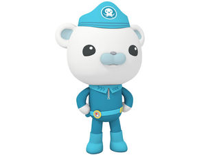
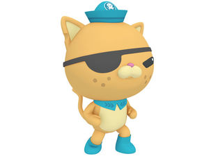
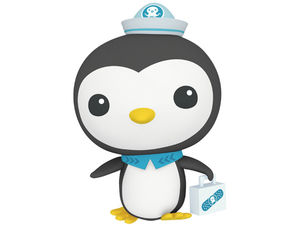
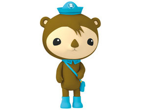
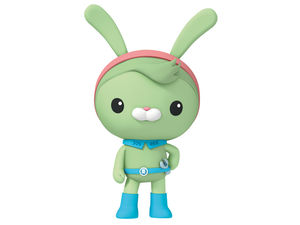
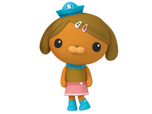
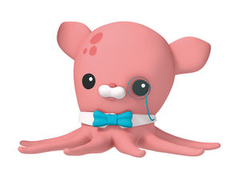
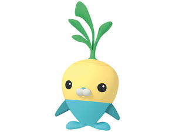

The Octonauts are an anthropomorphic team of underwater explorers. Originally a series of illustrated books, the Octonauts are now popularied in a computer-animated children's TV show.
The show, and it's associated properties, encourage interest in science, technology, and environmentalism. Using their high-tech deep sea vehicles, the team encounters real marine animals and works to solve problems, both natural and man-made.
My son is four years old, and he is crazy about the Octonauts. If we turn on the TV, he demands to watch Octonauts. If I give him an iPad, he looks for anything Octonauts on YouTube. If he uses a computer, he wants to play games on the Octonauts website. We have at least 5 Octonauts books, and read at least one almost every night. I'm very happy that he chose such a positive and educational show to obsess over, but I wish he could get his emotions under control when we tell him time is up. Anytime we have to take the Octonauts away, it's a tantrum.
| Picture | Name | Job | Species | Positive Role |
|---|---|---|---|---|
|  | Barnacles | Captain | Polar Bear | Barnacles shows kids to how to lead with bravery and compassion. |
|  | Kwazii | Lieutenant | Cat | Kwazii teaches kids to be outgoing and adventurous, that they should enjoy learning new things. |
|  | Peso | Medic | Penguin | As a medic, Peso exemplifies kindness and caring for all creatures. |
|  | Shellington | Scientist | Sea Otter | Although timid, Shellington's love of marine biology and the sciences makes him a role model. |
|  | Tweak | Engineer | Rabbit | Tweak is energetic and smart, she encourages kids to be interested in machines and technology. |
|  | Dashi | Computer Technician | Dog | Besides being the computer master on the crew, Dashi is also a photographer. Her role shows that technology and creativity can go together. |
|  | Inkling | Oceanographer | Octopus | The founder of the team and the bookworm, Professor Inkling lets kids know that it's important to read and study. |
|  | Tunip | Cook | Vegimal - Turnip | The vegimals are anthropomorphic vegetables, and Tunip is the most prominent one on the show. He is a cook and gardener, and he provides a bit of comic relief. |